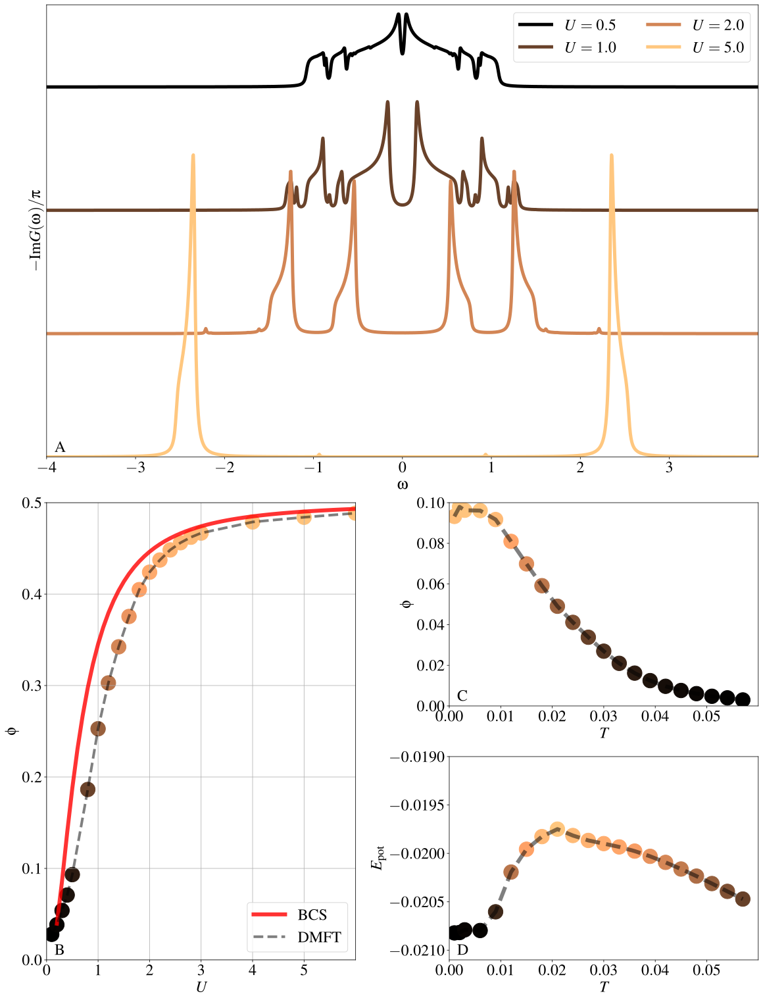

Attractive Hubbard model
In this second example we focus on the use of EDIpack ED method
as a solver for DMFT in presence of superconductivity, i.e. ed_mode = superc.
We consider the simple, but non-trivial, case of the attractive single-band Fermi-Hubbard model on a square lattice:
Source code
Similarly to the previous case, the preamble of the code contains
definition of the required local variables. We load all the required
modules, including DMFT_TOOLS library to perform some tasks
related to DMFT implementation. We read the input file using
ed_read_input(). Given the simplicity of this program we do
not make use of MPI setup here. In the absence of MPI
initialization, the EDIpack.0 code will automatically fall back to
serial execution.
program ed_ahm_2d
USE EDIPACK
USE SCIFOR
USE DMFT_TOOLS
implicit none
!> a list of the variable used in this code
...
!> Parse some variables
call parse_cmd_variable(finput,"FINPUT",default='inputAHM.conf')
call parse_input_variable(wmixing,"wmixing",finput,default=0.5d0,comment="Mixing bath parameter")
!> read ED input
call ed_read_input(trim(finput))
We deal with superconducting case using Nambu structure of the local functions and Hamiltonians, for instance the Green's function has the matrix form:
where the \(\hat{A}\) indicates the multi-orbital character of the function, while the \(\bar{A}\) symbol indicates the components related to the first row ones by particle-hole and time-reversal symmetry. The actual implementation of such symmetries depends on the argument of the functions, i.e. Matsubara or Real-axis. Exploiting the relation among components, we need to keep track only of the first row elements. To this end, we consider a further leading dimension of size 2 for all local functions and Hamiltonian.
!> Allocate local functions. The leading dimension indicates the Nambu 11,12 components.
! We get the other components by symmetry.
allocate(Gmats(2,Nso,Nso,Lmats))
allocate(Smats(2,Nso,Nso,Lmats))
allocate(Weiss(2,Nso,Nso,Lmats))
allocate(Greal(2,Nso,Nso,Lreal))
allocate(Sreal(2,Nso,Nso,Lreal))
Next we construct the dispersion and the exact DOS of the 2d square lattice using SciFortran functions. Note again the leading dimension 2 of the dispersion.
!> Build the 2d square lattice exact DOS and dispersion for the Nambu structure (use DMFT_TOOLS)
! We ask for separate dispersions, or two H(k), for the two diagonal Nambu components 11,22
allocate(Edos(2,1,Le)) ![Nambu 11,12, Number of orbitals, Number of energy levels]
Edos(1,1,:) = linspace(-D,D,Le,mesh=de)
Edos(2,1,:) =-linspace(-D,D,Le,mesh=de)
allocate(Ddos(1,Le))
do i=1,Le
Ddos(1,i) = dens_2dsquare(Edos(1,1,i),D)*de
enddo
!> Get local Hamiltonian (to be used in DMFT_TOOLS)
allocate(H0(2,1))
H0=0d0
We start the DMFT calculation by query the bath dimension (which include superconductive parameters) and allocating the bath on the user side. Finally we initialize the ED solver.
!> Get bath dimension and allocate user bath to this size
Nb=ed_get_bath_dimension()
allocate(Bath(Nb))
allocate(Bath_prev(Nb))
!> Initialize the ED solver (bath is guessed or read from file)
call ed_init_solver(bath)
Then we implement the DMFT loop, using a similar structure as we discussed in the previous sections:
Solve the quantum impurity problem for a given user bath \(\vec{b}\), which with
ed_mode= superc includes the bath pair amplitudes.Retrieve Matsubara self-energies \(\Sigma\) and \(S\), get the local Nambu Green's function \(\hat{G}_{loc}=\int d\epsilon [i\omega_n + \mu - \hat{\epsilon} - \hat{\Sigma}(i\omega_n)]^{-1}\) where the \(\hat{A}\) indicates the multi-orbital and the Nambu structure.
Implement DMFT self-consistency to update Nambu Weiss fields: \(\hat{{\cal G}}_0 = [\hat{G}^{-1}_{loc} + \hat{\Sigma}]^{-1}\)
Update the user bath \(\vec{b}\) using \(\chi^2\) optimization against the obtained updated Nambu Weiss fields.
Check error and restart.
!DMFT loop
iloop=0;converged=.false.
do while(.not.converged.AND.iloop<nloop)
iloop=iloop+1
!> Solve the impurity problem, retrieve matsubara self-energy
call ed_solve(bath)
!> Retrieve impurity self-energies (normal, anomalous)
call ed_get_sigma(Smats(1,:,:,:),axis='m',type='n')
call ed_get_sigma(Smats(2,:,:,:),axis='m',type='a')
!> Get Gloc (using DMFT_TOOLS)
call get_gloc(Edos,Ddos,H0,Gmats,Smats,axis='m')
!> Update the Weiss field: (using DMFT_TOOLS).
call dmft_self_consistency(&
Gmats(1,:,:,:),Gmats(2,:,:,:),&
Smats(1,:,:,:),Smats(2,:,:,:),&
Weiss(1,:,:,:),Weiss(2,:,:,:) )
!> Fit the new bath, starting from the current bath + the update Weiss field
call ed_chi2_fitgf(Weiss(1,:,:,:),Weiss(2,:,:,:),bath,ispin=1)
!> Linear mixing of the bath (this can be done in alternative of mixing Weiss)
if(iloop>1)Bath = wmixing*Bath + (1.d0-wmixing)*Bath_prev
Bath_prev=Bath
!Check convergence (using DMFT_TOOLS)
converged = check_convergence(Weiss(1,1,1,:),dmft_error,nsuccess,nloop)
enddo
Finally, once converged DMFT solution has been obtained we can get real-axis Green's functions using the retrieved normal and anomalous self-energies:
!> retrieve real-axis self-energies (n, a) and build local Green's function
call ed_get_sigma(Sreal(1,:,:,:),axis='r',type='n')
call ed_get_sigma(Sreal(2,:,:,:),axis='r',type='a')
call get_gloc(Edos,Ddos,H0,Greal,Sreal,axis='r')
Results
We present some results obtained using this EDIpack.0 based program. To begin with, we show in panel A a snapshot of the evolution of the spectral functions \(-\Im G(\omega)/\pi\) upon increasing the attraction strength \(U\). The tiny gap visible for small attractions (BCS regime) evolves into a large one, separating two high energy features in the BEC regime.
{kind=link}
In panel B we report the evolution of the pair amplitude \(\phi= \langle c_{\uparrow}c_{\downarrow}\rangle\) as a function \(U\). For comparison, we also show the mean-field results (red solid line). In both cases the exponential activation of the order parameter is numerically harder to reproduce. The local quantum fluctuations in DMFT slightly reduce the value of \(\phi\) compared to mean-field solution.
In the remaining two panels C and D we analyze the temperature behavior of superconducting solution at the edge of the BCS regime, \(U=0.5\). This also illustrates the capability of EDIpack.0 to obtain finite temperature results. In C we report the fall off of the pair amplitude as a function of temperature, while in panel D we show the corresponding potential energy behavior.
The program to solve the main model is available here:
Attractive Hubbard Code
Here is a list of bath files:
Bath \(U=-0.5\):
hamiltonian.restartBath \(U=-1.0\):
hamiltonian.restartBath \(U=-2.0\):
hamiltonian.restartBath \(U=-5.0\):
hamiltonian.restart
An example of the input file used in the calculations can be find here: InputFile